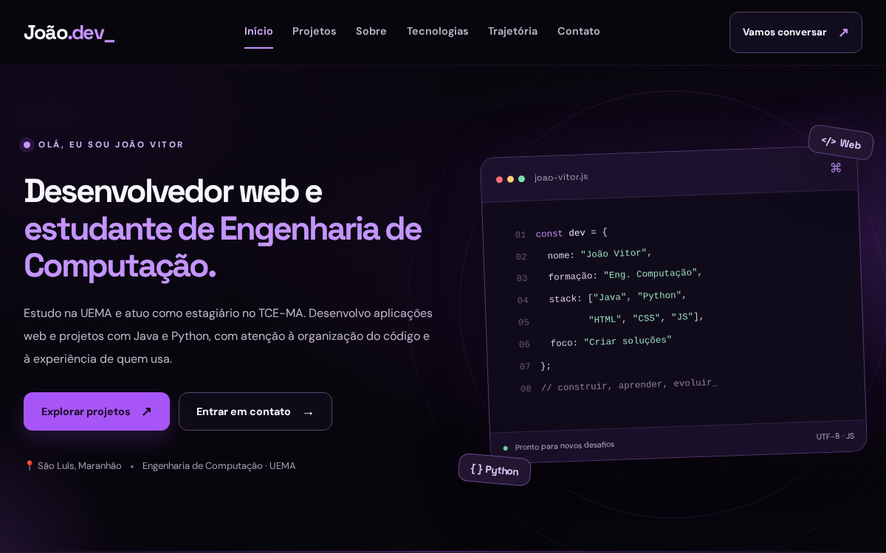

01 / WEBSITE PESSOAL
Portfólio pessoal
Apresentação profissional com projetos, formação e canais de contato reunidos em uma interface responsiva.
- Objetivo
- Facilitar a descoberta dos meus trabalhos e o contato para novas oportunidades.
- Implementação
- HTML semântico, estilos reutilizáveis e navegação com suporte a teclado.